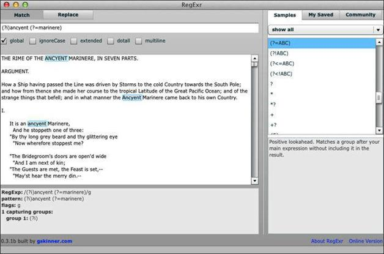
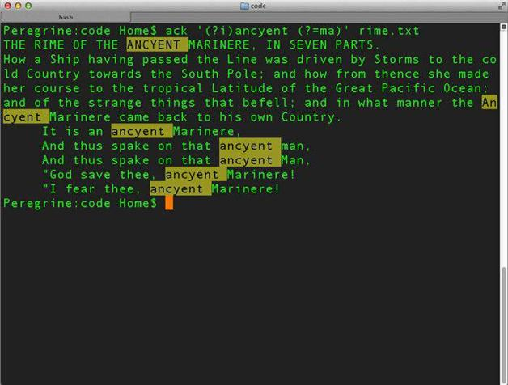

8.1 正前瞻
假设要匹配单词ancyent，且要求紧随其后的单词是marinere（为与文件中的单词一致，我采用了古代拼写法）。要达到这个目的，我们可以使用正前瞻。
首先在RegExr桌面版程序中试一下。将下面这个不区分大小写的模式输入到顶部的文本框内：
(?i)ancyent (?=marinere)
在RegExr中，还可以勾选ignoreCase旁的复选框来指定不区分大小写，这两种方式都是可以的。
由于我们使用了不区分大小写的选项（?i），就不必担心模式中用的大小写形式了。现在就是在每一行中寻找后跟marinere的单词ancyent。结果会在模式区域下面的文本区中标亮（参见图8-1）；但只有模式的第一部分（ancyent）是被标亮的，环视模式（Marinere）不会标亮。

图8-1 RegExr中的正前瞻
现在使用Perl来做正前瞻。你可以写这样一个命令：
perl -ne 'print if (?i)ancyent (?=marinere)' rime.txt
其输出如下：
THE RIME OF THE ANCYENT MARINERE, IN SEVEN PARTS.
How a Ship having passed the Line was driven by Storms to the cold Country towards
the South Pole; and how from thence she made her course to the tropical Latitude of
the Great Pacific Ocean; >and of the strange things that befell; and in what manner the
Ancyent Marinere came back to his >own Country.
It is an ancyent Marinere,
"God save thee, ancyent Marinere!
"I fear thee, ancyent Marinere!
该诗有五行内容中的ancyent出现在marinere之前。如果要求ancyent之后的单词以大写或小写字母m开头，该如何做呢？可以这样：
perl -ne 'print if (?i)ancyent (?=m)' rime.txt
现在除了Marinere，跟在后面的还可以有man和Man：
And thus spake on that ancyent man,
And thus spake on that ancyent Man,
ack也可以使用环视功能，这是因为它是由Perl语言编写的。ack的命令行界面与grep十分相似。
试一下这个命令：
ack '(?i)ancyent (?=ma)' rime.txt
你会看到高亮显示的结果，如图8-2所示。

图8-2 在终端中使用ack进行正前瞻查找
使用ack时，可以用命令行选项-i指定不区分大小写，而不使用嵌入选项(?i)：
ack -i 'ancyent (?=ma)' rime.txt
若要在ack的输出中添加行号以方便计数，可以采用多种方法。比如可以加上-H选项：
ack -Hi 'ancyent (?=ma)' rime.txt
也可以添加带有--output选项的代码：
ack -i --output '$.:$_' 'ancyent (?=ma)' rime.txt
这有点不太正统——关闭了标亮功能，但它确实起作用了。